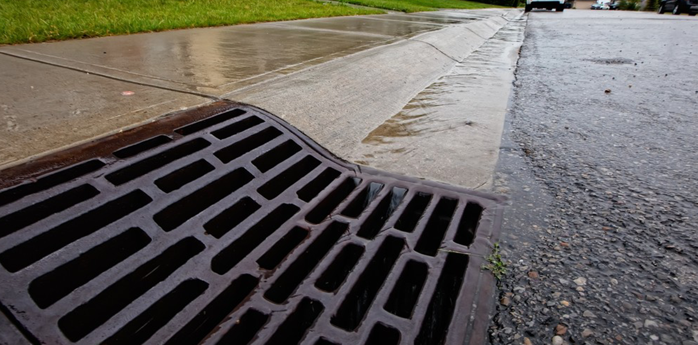

Comfordably Laid Draining - Your Drainlaying Solution
We provide drainage consultation and drainlaying solutions in and around the Christchurch areas. If you are outside of this area, then an arrangement can be made.

THIS IS IMAGE 01

THIS IS IMAGE 02

THIS IS IMAGE 03

THIS IS IMAGE 10

THIS IS IMAGE 11

THIS IS IMAGE 12
We are a family orientated business, who has over 34 years’ experience and 29 years self-employed.
We can isolate root damage, blockages, sewer lines, storm water and broken pipes with our CCTV video camera diagnosis of your drainage.
With considerable hands-on experience and vast industry knowledge, we can offer advice and direction, and are happy to meet onsite for an obligation-free consultation or to provide a quote.
24/7 Call Out Help For Blocked Drains!
We can offer you:
Description

Description

Description

Description

Description

Description